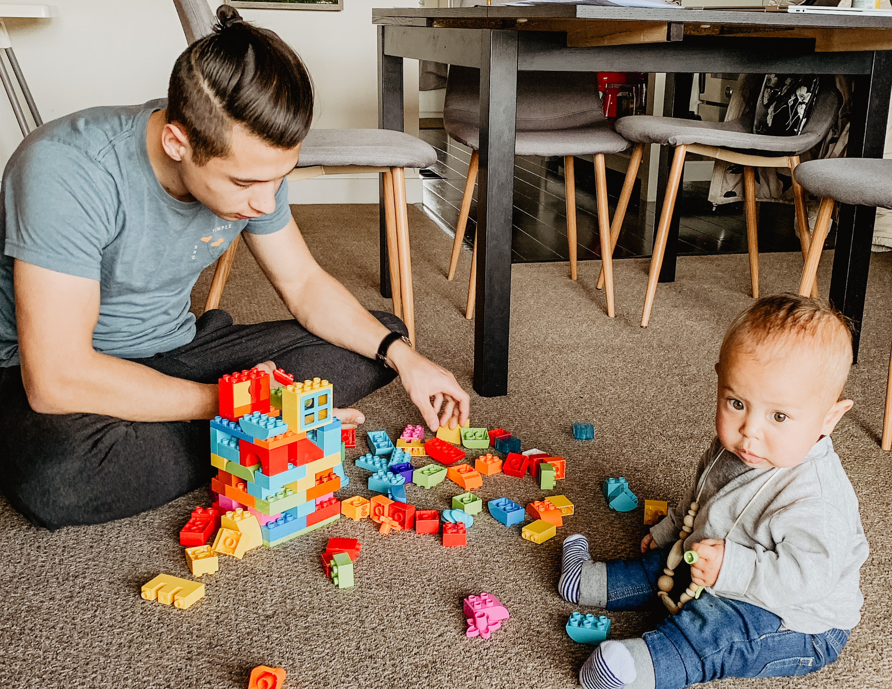

Why am I Quarantined?
On March 17, 2020 most of the Bay Area was ordered to "shelter-in-place" for 3 weeks because of the spread of the coronavirus. This might be the first time in history that there has been a worldwide pandemic but I am trying to make the best of it. I'm trying to stay positive and find creative ways to have fun which is one of the reasons why I made this website. Jared and I started social distancing a few weeks ago and haven't killed eachother yet so i'll share my tips with you.
How to keep your sanity
- Play the Sneaky Sasquatch.
- Take a coding class or any class on Skillshare.
- Watch Greys Anatomy again.
- Use Marco Polo and Facetime to keep in touch with your long distance friends(which is EVERYONE now).
Diary of our Quarantine
Day 1
Jared went to work to get his desktop and set up his new workspace at home. We were both really worried about how that would work out and that we would be in each other's way all the time but it worked out fine. We used our dining table as a desk for Jared since we wont be having anyone over anytime soon. I can just eat at the couch.
Day 2
We slept on the couch last night by the fireplace. London has been really happy lately and sleeping in which has been so nice. Went for a walk in the afternoon once the rain cleared up.
Day 3
Jared watched London this morning so I could sleep in. I had virtual therapy in the afternoon. I started my HTML coding class this afternoon.
Day 4
I've been watching Grey's Anatomy with my local mom friend during our babies morning nap. This morning we facetimed and watched an episode together. I've never done something like that before but I guess thats my new life. I have also been using Marco Polo quite a bit to communicate with my long distance friends which is everyone at this point.
Day 5
Our neighbors gave us a toy piano shaped like a cat that makes a "meow" sound when you press the keys. I think Jared likes the piano just as much as London does.